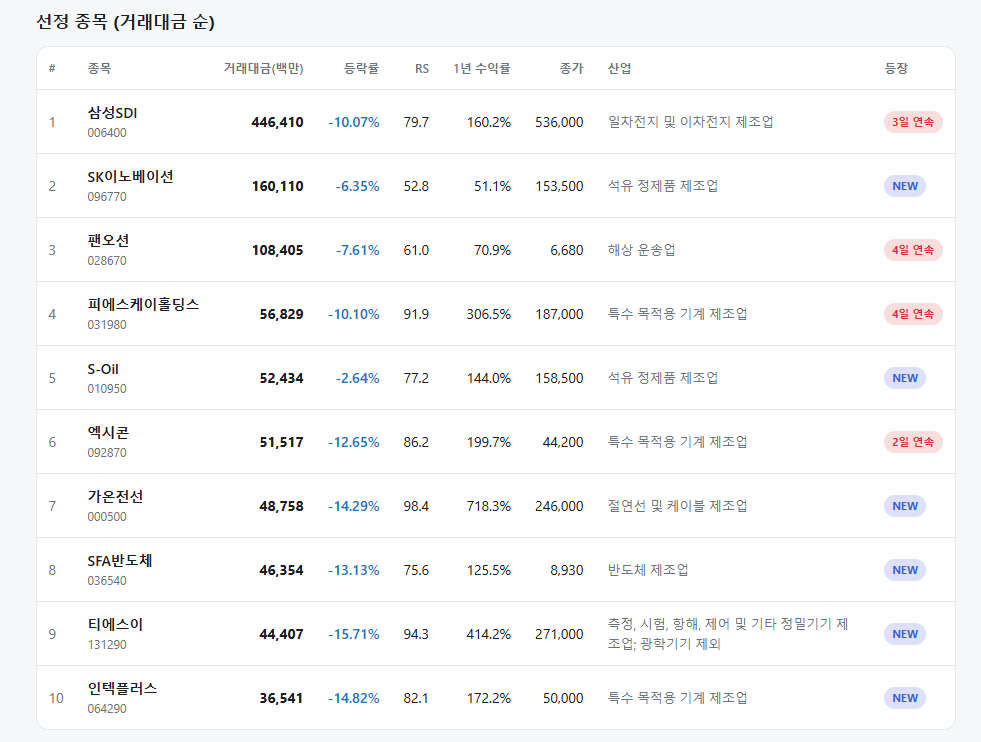
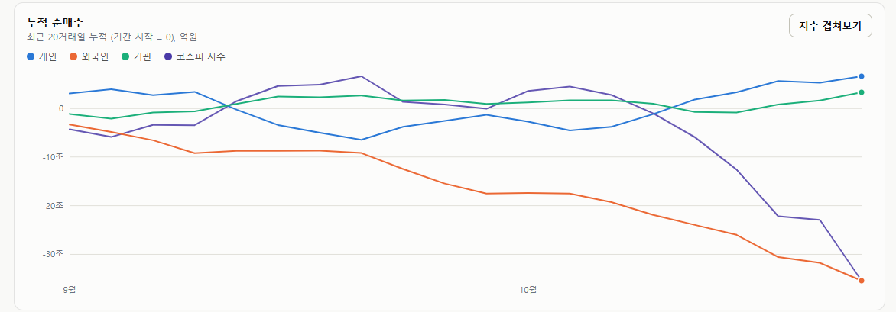

매일의 주도주 정리를 위해 기록합니다.
연속적으로 나온 종목들 또는 상승 후 조정받는 종목 위주로 리서치 해보시면 좋을 것 같습니다.

*오늘의 퀀트픽은 없습니다.
#주도섹터
상업서비스, 담배 및 일부 제약
주요 업종 및 종목: 상업서비스와공급품(+4.58%), 담배(+3.08%), 컴퓨터와주변기기(+1.78%), 다각화된통신서비스(+0.61%), 삼성바이오로직스(+3.38%), 셀트리온(+0.67%), 양지사, KT&G.
분석: 시장 폭락의 무풍지대인 상업서비스(+4.58%)와 필수소비재인 담배(+3.08%) 업종이 상승 최상단에 위치했습니다. 품절주 테마로 분류되는 양지사 등이 급등했으며, 대형 제약주인 삼성바이오로직스(+3.38%)와 셀트리온(+0.67%)이 지수 폭락 속에서 하방 방어 역할을 수행했습니다.
#조정섹터
IT 하드웨어, 반도체 메가 캡 및 산업재 전면 붕괴
주요 업종 및 종목: 전자장비와기기(-14.91%), 전기장비(-13.41%), 반도체와반도체장비(-11.13%), 통신장비(-10.08%), 삼성전기(-16.89%), SK(-12.02%), SK하이닉스(-11.98%), 두산에너빌리티(-10.23%), 삼성전자(-10.13%), 삼성물산(-9.95%), 삼성SDI(-9.98%), 삼성전자우(-9.56%), 현대차(-7.34%), LG에너지솔루션(-6.87%).
분석: 전자장비와기기(-14.91%) 및 전기장비(-13.41%) 업종이 13~14%대 붕괴 수준의 폭락을 기록했습니다. 삼성전기(-16.89%)가 하한가에 육박하는 폭락세를 보였고, SK하이닉스(-11.98%)와 삼성전자(-10.13%) 본주 역시 10% 이상 폭락하며 코스피 5,500선 추락을 주도했습니다. 뿐만 아니라 2차전지(삼성SDI, LG에너지솔루션), 지주사(SK, 삼성물산), 인프라(두산에너빌리티) 등 업종을 가리지 않는 패닉 셀링이 쏟아졌습니다.
#수급동향

코스피 지수는 -7.57% 폭락한 5,554.22로 마감하며, 6,000선과 5,600선 지지대가 하루아침에 붕괴되는 패닉 장세를 연출했습니다. 코스닥 지수 역시 -7.65% 폭락한 760.82를 기록하며 투심이 전면 마비되었습니다.
유가증권시장에서 외국인 투자자는 무려 3조 6,694억 원(20일 누적 -35조 4,081억 원)을 순매도하며 전례 없는 대규모 이탈을 지속했습니다. 기관 투자자는 1조 6,876억 원(20일 누적 +3조 2,663억 원), 개인 투자자는 1조 3,390억 원(20일 누적 +6조 5,556억 원)을 각각 순매수하며 방어에 나섰으나 지수 폭락을 막기에는 역부족이었습니다.
코스피 2천으로 돌아간다? — 극단적 비관론을 점검하는 세 가지 질문
지난주부터 이어진 하락에 오늘 서킷브레이커까지 겹치면서 투자심리가 급격히 식고 있습니다. 공교롭게도 삼성전자·SK하이닉스의 자사주 매입이 막바지에 이르자마자 시작된 하락이라, 한국 증시의 체력 자체를 의심하는 목소리가 커지는 시점입니다.
이럴 때 꼭 등장하는 것이 극단적인 시나리오입니다. “5천이 깨지면 4천, 3천, 결국 2천까지 간다”는 식입니다. 미국 금리 부담, 중동 불안, 그리고 메모리 반도체의 무한 성장 기대를 꺾는 CXMT 변수까지 겹쳤고, 차트를 보면 변형된 헤드앤숄더처럼 보이기도 하니 그런 상상이 자연스러운 것도 사실입니다.
① 5천이 깨지면 이미 '대폭락장'이다
코스피는 오늘 5,554로 마감하며 7월 종가 저점(5,593)을 내줬습니다. 여기서 5천 선마저 깨지면 어떻게 되느냐는 불안이 커집니다.
그런데 5천 아래는 고점 대비 -40% 이상 하락한 영역입니다. 이 정도 낙폭은 2020년 3월 코로나, 2008년 금융위기, 2002~2003년 이라크 전쟁, 2000년 닷컴 붕괴 때나 나왔던 수준입니다. 그리고 그 네 번 모두, 시장은 몇 차례의 큰 고통을 안겨준 뒤 바닥 찾기에 들어갔습니다. 역설적이지만 정말 우려하는 그 자리가 온다면, 그때는 비관이 아니라 스마트머니가 헐값에 던져진 주식을 주워 담는 구간입니다. 어제 25년 데이터로 확인한 것과 같은 결론입니다. 급락이 깊을수록 그 뒤의 반등은 강했습니다.
② PBR 1배 선이 4,000 근처까지 올라왔다
지수 기준 PBR 1배는 한국 증시에서 오랫동안 마지노선 역할을 해온 수준입니다. 그런데 이 선 자체가 올라왔습니다. 2024~2025년에는 2천 대 후반에서 3천 대로, 2026년 현재는 이성수 대표의 분석으로 4,000선 근처까지 높아졌습니다. 기업 이익이 쌓이면서 자본 자체가 커졌고, 상법 개정과 배당소득 분리과세 같은 밸류업 정책이 더해져 시장이 체감하는 하한선은 그보다 몇 단계 더 위에 있을 가능성이 큽니다.
즉, 하락장이 더 이어지더라도 4천과 3천이 연달아 깨지고 2천까지 간다는 시나리오는 "주가가 장부가 이하로 간다"는 뜻이 됩니다. 2025년 이전의 한국 증시라면 모를까, 지금의 이익 체력에서 그 가능성은 매우 낮습니다.
③ 조용한 연기금, 5천 초반에서는 움직일 수밖에 없다
올해 하락장에서 유독 보이지 않는 주체가 연기금입니다. 국민연금의 자산배분 방식이 바뀌면서 상승기에 공격적으로 팔지도 않았지만, 지금처럼 빠지는 구간에서도 존재감이 없습니다. 예전 같으면 이 정도 낙폭에서는 매수가 들어왔어야 할 자리입니다.
다만 코스피가 5천 초반까지 밀리면 국민연금의 국내 주식 비중이 목표치(2026년 기준 20.8%) 아래로 내려갈 가능성이 큽니다. 그때부터는 의지가 아니라 규칙에 따라 매수가 들어옵니다. 실제로 지난 7월 말 코스피가 5천 대 중반까지 밀렸을 때 하루 수천억 원대 연기금 순매수가 들어왔습니다. 자발적 매수는 없어도 피동적 안전판은 남아 있는 셈입니다.
7월 이후 조정이 거의 100일째입니다. 사람의 마음을 지치게 하기에 충분한 시간이고, 오늘 같은 날은 더욱 그렇습니다. 경계와 분석은 필요합니다. 다만 패닉은 냉정한 판단을 앗아갑니다.
세가지가 말하는 것은 하나입니다. 아래쪽에 든든한 언덕이 있다는 것. 5천 아래는 역사적으로 바닥 찾기가 시작된 자리였고, PBR 1배 선은 4천 근처로 올라왔으며, 5천 초반에는 연기금이 규칙상 들어옵니다. 하락이 끝났다는 뜻은 아닙니다. 다만 2천으로 돌아간다는 상상은, 지금 시장이 아니라 지친 마음이 그리는 차트입니다.
오늘 지수가 급락하면서 항복 매물이 나왔을것이라 생각됩니다.
어려운 장이지만 힘내시길 바라겠습니다.